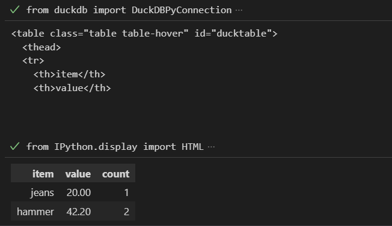
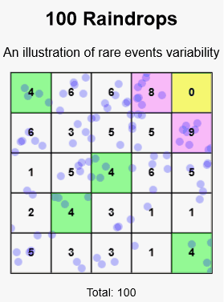
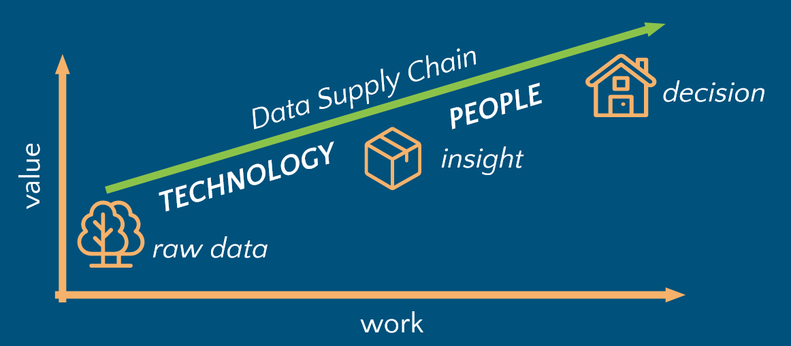
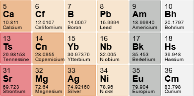

Useful to write HTML tables without pandas

Observing and fixing rare events is difficult to do reliably.
Preparation of water-stable amine–borane (RNH2•BH3) derivatives of peptides and proteins. Written by me in October 2015.

Generating insights from raw data and delivering insights to decision makers are two critical stages for creating value from data.
Are you turning to data to confirm your beliefs, or are you truly exploring the possibilities?
Context and path to adoption of the best scientific and publishing system of today

Something else to get started.
Something to get started.